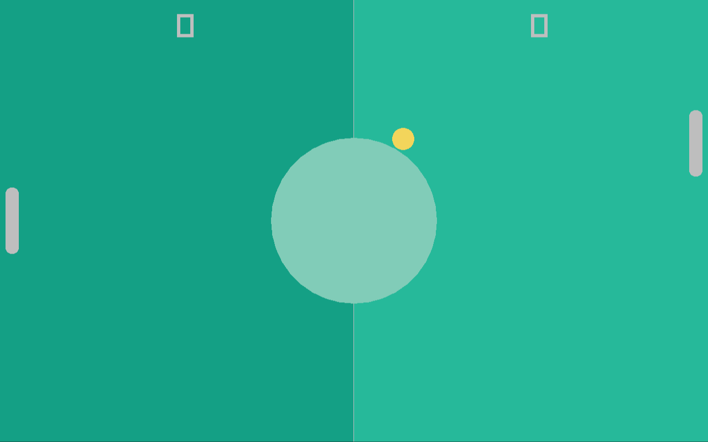
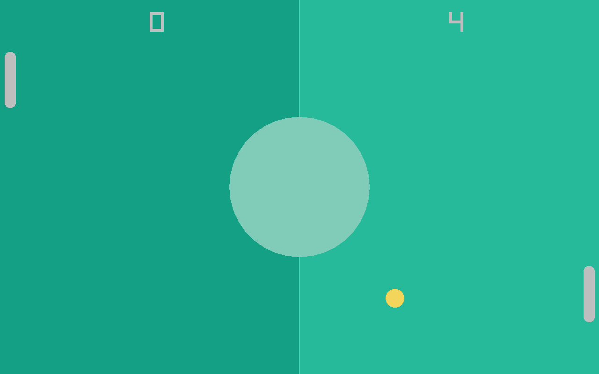

Scoring System
Currently the ball is able to collide with the left and right side of the screen with no consequences. In pong the player or the cpu each get a point when the ball flies past the player or cpu respectively.
UI
The first thing we will start on is to add UI to the game, it's just a number at the top of each game-board half describing how many points each player respectively has. For this, we add the player_score and cpu_score variables to the main function:
u32 player_score = 0;
u32 cpu_score = 0;
TimeStamp last_frame = now();
while not rl.WindowShouldClose():
// ...
We draw these numbers using the DrawText function of raylib
extern def DrawText(const str text, mut i32 posX, mut i32 posY, mut i32 fontSize, mut Color color);
by just adding two calls to DrawText before calling EndDrawing at the end of the game loop:
// Draw UI
rl.DrawText(str(player_score), screen.x / 4, 20, 60, Colors.white);
rl.DrawText(str(cpu_score), (screen.x * 3) / 4, 20, 60, Colors.white);
rl.EndDrawing();
The UI is drawn at the very end so that the ball flies "behind" it. With this simple change, we now have two labels telling us the scores of each player.

GameState
The next thing we add is a GameState enum to the collisions.ft file, and we change the check_collisions function to return a given game state, based on certain events (like a player scoring a value):
collisions.ft:
use Core.print
use "ball.ft"
use "paddle.ft"
enum GameState:
RUNNING, P1_WON, P2_WON;
def check_collisions(mut Ball ball, FPaddleCommon player, FPaddleCommon cpu) -> GameState:
if player.collides_with(ball):
print("Collided with player!\n");
ball.reflect_v();
if cpu.collides_with(ball):
print("Collided with cpu!\n");
ball.reflect_v();
return GameState.RUNNING;
We do not change the main function yet, as we first need to properly return P1_WON and P2_WON, but for that we need a way to check whether the ball has passed the paddle. Since the actual behaviour is different for both paddles but it's a common paddle behaviour, we add just the function declaration to the FPaddleCommon func module:
func FPaddleCommon requires(DPaddle paddle):
const def ball_passed(Ball ball) -> bool;
Since the function is virtual (no body) we need to link the function declaration to a proper function definition in both the Player and Cpu entities:
entity Player:
data: DPaddle paddle;
func: FPaddleCommon;
link: FPaddleCommon::ball_passed -> Player::ball_passed;
Player(paddle);
const def ball_passed(Ball ball) -> bool:
return false;
// ...
and
entity Cpu:
data: DPaddle paddle;
func: FPaddleCommon;
link: FPaddleCommon::ball_passed -> Cpu::ball_passed;
Cpu(paddle);
const def ball_passed(Ball ball) -> bool:
return false;
// ...
And now that both the Player and Cpu both implement the function, we can call it in the check_collisions function:
def check_collisions(mut Ball ball, FPaddleCommon player, FPaddleCommon cpu) -> GameState:
// Check if the ball passed one of the players
if cpu.ball_passed(ball):
return GameState.P1_WON;
if player.ball_passed(ball):
return GameState.P2_WON;
// ...
and to now complete this feature addition, we need to check the return value of the check_collisions call in the main function:
// Check for collisions
switch check_collisions(ball, player, cpu):
RUNNING:
break;
P1_WON:
player_score++;
P2_WON:
cpu_score++;
The scores will not change yet because the ball_passed functions always return false, so we need to implement them. They aren't that hard, for the Player it's implementation is
const def ball_passed(Ball ball) -> bool:
return ball.get_x() + ball.get_radius() > paddle.pos.x;
and for the Cpu it's
const def ball_passed(Ball ball) -> bool:
return ball.get_x() - ball.get_radius() < paddle.pos.x;
As you can see, the player_score++; is executed a bunch of times when the score is increased. This is because when a score is made, all game object should be reset to their starting positions.
For this we add a small helper function to the main.ft file:
def reset_objects(mut Ball ball, mut Player player, mut Cpu cpu):
ball.reset();
player.reset();
cpu.reset();
and then we just call it directly after creating the three objects and in the respective switch branches P1_WON and P2_WON.

We need to do one small change though to the ball.ft file, the bounce_left and bounce_right case is no longer needed. It can be removed entirely from the update function:
def update(f32 delta):
ball.pos += ball.dir * (delta * ball.speed);
const bool bounce_top = ball.pos.y - ball.radius < 0 and ball.dir.y < 0;
const bool bounce_bottom = ball.pos.y + ball.radius > f32(rl.GetScreenHeight()) and ball.dir.y > 0;
if bounce_top or bounce_bottom:
self.reflect_h();
With this up and running, the game is not far from finished. Next up we will add very simple sound-effects to the game.